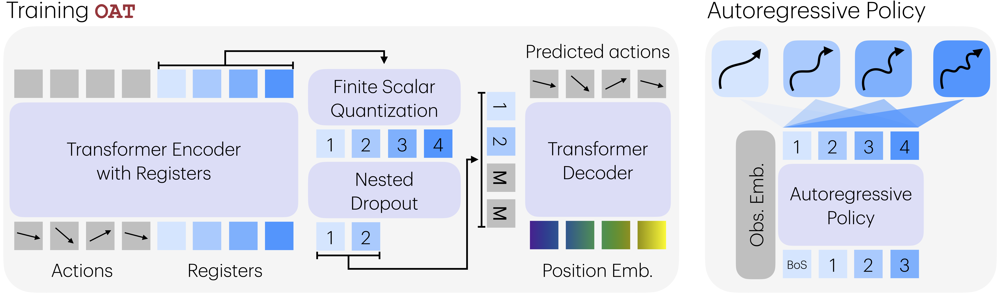

Abstract
Autoregressive policies offer a compelling foundation for scalable robot learning by enabling discrete abstraction, token-level reasoning, and flexible inference. However, applying autoregressive modeling to continuous robot actions requires an effective action tokenization scheme. Existing approaches either rely on analytical discretization methods that produce prohibitively long token sequences, or learned latent tokenizers that lack structure, limiting their compatibility with next-token prediction. In this work, we identify three desiderata for action tokenization — reasonable compression, universal decodability, and a left-to-right causally ordered token space — and introduce Ordered Action Tokenization (OAT), a learned action tokenizer that satisfies all three. OAT discretizes action chunks into an ordered sequence of tokens using transformer with register tokens, finite scalar quantization, and ordering-inducing training mechanisms. The resulting token space aligns naturally with autoregressive generation and enables prefix-based detokenization, yielding an anytime trade-off between inference cost and action fidelity. Across more than 20 tasks spanning four simulation benchmarks and real-world settings, autoregressive policies equipped with OAT consistently outperform prior tokenization schemes and diffusion-based baselines, while offering significantly greater flexibility at inference time.
Method
Our objective is to learn an action tokenizer that satisfies the three desiderata: reasonable compression, universal decodability, and a structured left-to-right causal ordering over tokens. Prior learned tokenizers produce compact, decodable latents but lack an explicit ordering, which limits compatibility with autoregressive policies. OAT remedies that by discretizing action chunks through transformer-based register tokens, FSQ quantization, and a conditional decoder. Causal attention across registers together with nested dropout during training induces a coarse-to-fine ordering where earlier tokens capture global structure and later tokens refine details. This ordered latent space makes any prefix decode-worthy, enabling variable-length and anytime reconstruction as shown in the figure above.
Interactive MeshCat Rollouts
Visualization of reconstructed action chunks using increasing numbers of decoded tokens. Earlier tokens capture the coarse, global structure of the motion, and additional tokens progressively refine fine-grained details, producing trajectories that increasingly match the ground truth. All rollouts are generated by the same model.
Rate-Distortion-Modelability Trade-Off
Tokenizers juggle rate (compression) and distortion (fidelity). OAT adds modelability as a third axis. By inducing ordering, we give autoregressive models structured prefixes to learn from, which keeps the model's job focused on the distribution instead of discovering structure from scratch. Enforcing ordering keeps rate-distortion curves smooth and ensures policies can decode at any prefix length, making deployment more reliable in real-world robot settings.
Why ordering drives modelability
- Structured prefixes reduce entropy for the generative model. Anytime decoding remains meaningful because every prefix obeys the coarse-to-fine hierarchy. By staying aligned with the rate-distortion trade-off, we keep both efficiency and expressiveness.
Information-Theoretic Interpretation of Token Ordering
The ordering induced by OAT mirrors an information-theoretic principle: the number of bits required to represent information is inversely proportional to its frequency. So the tokenizer learns to prioritize coarse structure before fine-grained details. Since action chunks \(a_{1:H_a}\) follow a highly skewed distribution, the early tokens capture dominant motions shared across trajectories, while later tokens progressively refine the residuals.
This progressive coding behavior comes directly from nested dropout. Because every prefix needs to decode into a meaningful action, the tokenizer allocates capacity in decreasing order of frequency and importance. The result is a natural explanation for why reconstruction quality improves monotonically with prefix length and why token order aligns strongly with autoregressive prediction—ordering emerges from optimizing under variable information budgets, not from a heuristic.
Experiments

OAT Is Superior
OAT consistently outperforms prior action tokenization schemes and matches or exceeds the strongest baselines, while additionally enabling prefix-based decoding that is unavailable to existing methods. OAT exhibits a clear and consistent monotonic performance trend as the number of autoregressive steps increases. As additional tokens are generated, performance improves steadily: OAT4 closes much of the gap to QueST and DP, while OAT8 achieves the best performance across all benchmarks.

Compression Rate And Inference Latency
OAT enables a smooth and controllable trade-off between compression rate, inference latency, and policy performance. With full decoding, OAT and QueST have the same amount of compute due per inference.

Token Ordering Is The Key To Success
Across all benchmarks, removing token ordering leads to a consistent performance degradation. OATX's performance is significantly worse than OAT4 and OAT8, and in some cases falls below QueST. This indicates that the structure of the token space plays a critical role in effective autoregressive policy learning: by aligning the token space with next-token prediction, ordering introduces a favorable inductive bias that facilitates both learning and inference.
Real-World Execution
We provide over 90+ real-world robot execution videos, with both successful and failed attempts. Reloading the page randomizes the initial configurations. Use the controls below to filter videos by task and method. Halting during FAST execution is primarily caused by undecodable action tokens. In such cases, the policy is instructed not to produce any action and to remain stationary for safety reasons.
DP
Video unavailable for this task.
Video unavailable for this task.
Bin
Video unavailable for this task.
Video unavailable for this task.
FAST
Video unavailable for this task.
Video unavailable for this task.
QueST
Video unavailable for this task.
Video unavailable for this task.
OAT1
Video unavailable for this task.
Video unavailable for this task.
OAT2
Video unavailable for this task.
Video unavailable for this task.
OAT4
Video unavailable for this task.
Video unavailable for this task.
OAT8
Video unavailable for this task.
Video unavailable for this task.